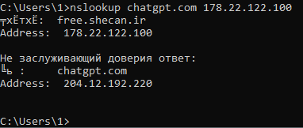

Всем доброго времени суток!
Подскажите, пожалуйста, аналоги Cloudflare WARP (CDN) которые работают через OpenVPN/ Wireguard/PPTP/L2TP и выдают в конечной точке зарубежный IP адрес.
Стоит задача обходить блокировки российских IPs со стороны зарубежных сайтов.
Что делал:
Поставил IPv6 (2606:4700:d0::a29f:c008:2408) в Endpoint в Cloudflare WARP на роутере, предварительно перед этим получив свой IPv6 через туннельного брокера и настроив 6in4.
Соединение есть, но WARP выдает российский IP.
Сделал тоже самое на VPS от h2nexus: его родной IP считается российским, но через WARP даёт нидерландский IP.
Связываю это с географией, видимо VPS ближе к нидерландскому CDN, а я к российскому. Хотя если ставил IPv4, то VPS WARP выдаёт российский IP.
Для меня это пока загадка почему так.
WARP не скрывает регион, а раньше даже ваш IP выдавал. Вам нужен обычный VPN.
варп такой себе впн, но по скорости аналогов вроде нет
есть забаненные сайты, а с голландией забаненных ресурсов будет еще больше
Есть список сайтов которые блокируют соединение с российскими IP, это исключительно для них, так сказать, «бесплатный» ВПН 
Warp-in-warp позволяет получить забугорный айпи. Есть вот такая реализация с cli. Oblivion из поста выше, это, насколько я понимаю, оболочка как раз для этой тулзы.
warp-plus --gool --wgconf /etc/wireguard/warp.conf
На стороне провайдера трафик маскированный UDP.
На стороне клиента socks прокси или экспериментальный TUN.
--gool значит warp in warp. Но IP по прежнему Cloudflare RU.
Что-то я не так делаю? warp.conf сгенерированный warp конфиг для wireguard. Хотя, вижу, что можно самому указать endpoint и какой-то warp key.
Хз. Я готовый профиль проге не скармливал, только добавил --cache-dir profiles, чтобы всё рядом легло, а не куда-нибудь в appdata или куда он там это пихает по дефолту. Он мне сгенерил первый профиль варпа, подключился, через него сгенерил второй, подключился через первый ко второму. В итоге если смотреть через 2ip.ru, например, то мне рисовало Швецию.
Ну и, естественно, не стоит забывать, что прога сама работает как сокс-прокси. По дефолту раздает на 127.0.0.1:8086
{kind=link}
Действительно. Правда, первый запуск надо делать под VPN, а то сервера регистрации блочит РКН. Но мне всё равно не повезло. Видно, что работают две учётки, город уже не мой, но все равно Россия, Санкт Петербург, Cloudflare. ChatGPT и Spotify не открываются.
Значит, вы действительно соединяетесь со Швецией в первой учётке, а я с Питером. Cloudflare лучше знает свою сеть. Попробуйте под одиночным варпом потестить скорость здесь https://speed.cloudflare.com/ Где он покажет локацию? У меня он тоже Питер показал там.
С одиночным варпом мне показывает СПб или МСК. Что и не удивительно, учитывая что я в СПб живу.
К чатЖПТ можно получить доступ прописав в etc/hosts 204.12.192.219 chatgpt.com Не уверен как это работает (и насколько это безопасно). Это какой-то лайфхак с иранским ДНС, который выдает какие-то специфические айпи от геоблоков. В итоге он мне выдал вот такой и оно заработало.
Не разбирался как сделать так чтобы получить конечный Wireguard конфиг для роутера с зарубежными IP.
Я так понимаю эти способы работают как отдельные VPN программы?
Спасибо. Не думаю, что это MITM, иначе бы браузер ругался. Наверное, какое-нибудь прозрачное проксирование.
Похоже, это адресок мимо капчи клоуда. Моментально открывается без проверок, которые были раньше.
откуда ты его вообще нашёл?
С этого форума и нашел
ясн, у меня через поиск только ты первоисточник)
там DNS 178.22.122.100
nslookup - chatgpt com ведет на их сервер 50.7.85.220
причём мне их DNS не отдаёт ничего для chatgpt com

хм, где то вчера тупанул, сейчас выдаёт
а в твой скрипт IPfinder.cmd его нельзя встроить?
Хочу вернуться к теме. Я не совсем понял, как Вы сгенерировали второй конфиг после того, как создался первый? Просто потому, что в командной строке warp-plus указали --gool? Вообще, довольно трудно понять, как этот warp-plus работает.
У меня просто warp-plus -v никуда подключиться не смог, но когда я задал warp-plus -v --scan, то смог, нашел endpoint’ы, запустил себя как прокси-сервер. Через прокси браузер пошел по сети CloudFlare. Есть и другие загадочные опции, например, --tunnel-experimental, когда он видимо создает через туннельный адаптер туннель и работает в режиме туннеля, а не прокси. Нет, не завелось.
С Psyphon та же история --cfon --country SE ни к чему такому не приводит.
Просто потому, что в командной строке warp-plus указали --gool?
Да, warp-plus генерит конфиги автоматически. Записываются в файл где-то в профиле. Главное, в этот момент чтобы работал второй VPN, т.к. сервер регистрации заблокирован. Потом другой VPN можно отключить. Советую дописать -4 (значит ipv4), т.к. с ipv6 могут быть проблемы.
Да, просто --gool указал и он создал 2 профиля. Сейчас у меня вот так стоит: -4 --gool --cache-dir profiles --scan
Насчет сифона, там не всегда все страны работают. Попробуйте другой код страны.
Как написали выше - при первичной регистрации может понадобиться гудбай/запрет для того, чтобы прошел регистрационный трафик. И убедитесь что в блеклисте гудбая/запрета есть cloudflareclient.com
кстати да. проверил на GUI
у меня --gool заработал только вместе с --scan
без него не запускается (ошибки выдает)
Я тоже сегодня испытания проводил при помощи GUI, использовал Oblivion Desktop из того же репозитория, что и сам warp-plus. Удобство в том, что настройки можно делать через интерфейс, а потом смотреть, какую командную строку GUI отдает самому warp-plus. В итоге warp-plus заработал в самом простом режиме (то есть прокси-сервер), когда я добавил ключ --endpoint и указал первый же попавшийся адрес, выданный мне вот этой утилитой GitHub - peanut996/CloudflareWarpSpeedTest: ⭐WARP IP 优选工具
Эксперименты с Psiphon я проводил в Oblivion Desktop, и там все прекрасно получилось. Я выбрал SE, GUI сформировал строку для warp-plus и спокойно подключился. Опять режим прокси, страна Швеция, работает стабильно. Но странное дело, вручную на warp-plus при тех же ключах командной строки, при тех же файлах профиля (а Oblivion Desktop пишет профили в appdata\local\cache) подключение вроде происходит, но ничего не работает, нет соединения с Интернет через прокси-сервер.
Режим Gool вроде работает через OD, но смысла в нем как-то немного. В итоге все равно получается РФ, да и с чего это будет по-другому, если и primary, и secondary профили совершенно одинаковые по содержимому. Как вообще это должно срабатывать? По случайному закону?
С туннелем ничего нигде не получается. Последние версии OD идут уже с отдельной консольной утилитой sing-box для создания туннеля. Через OD туннельный адаптер появляется в списке сетевых адаптеров Windows, но ничего через него не отправляется, и через минуту-две OD отключается, выдавая ошибку в журнале.
Да, я все проверил, профили создавал, обходя блокировки при помощи zapret, в этой части никаких проблем нет. А дальше все как-то явно хуже, чем CloudFlare Warp. Там все работает при помощи одной кнопки, идет через туннельный адаптер, удобно добавлять домены в исключения для раздельного туннелирования (это правда в OD тоже имеется). Ну а если нужна другая страна, то после подключения Warp просто запускаешь Psiphon 3 и всё.
Жду ваших комментариев по поводу OD и warp-plus.
в режиме прокси виден настоящий ип web-rtc на My IP Address - BrowserLeaks с “warp-plus”
как это работает?
непонятно о каком “режиме прокси”. если вы включаете любое прокси в хроме, то webrtc будет идти без прокси, так работает хром.
у меня эдж он использует прокси установленный в винде
ничего не меняет, движки одинаковые: так работает браузер, какой прокси не важно.
эдж это тот же хром, только немного сбоку, так что тут разницы нет никакой на чем именно вы запускаетесь
не могу понять почему подключение таким образом к варп после tun режет скорость до 3 мб